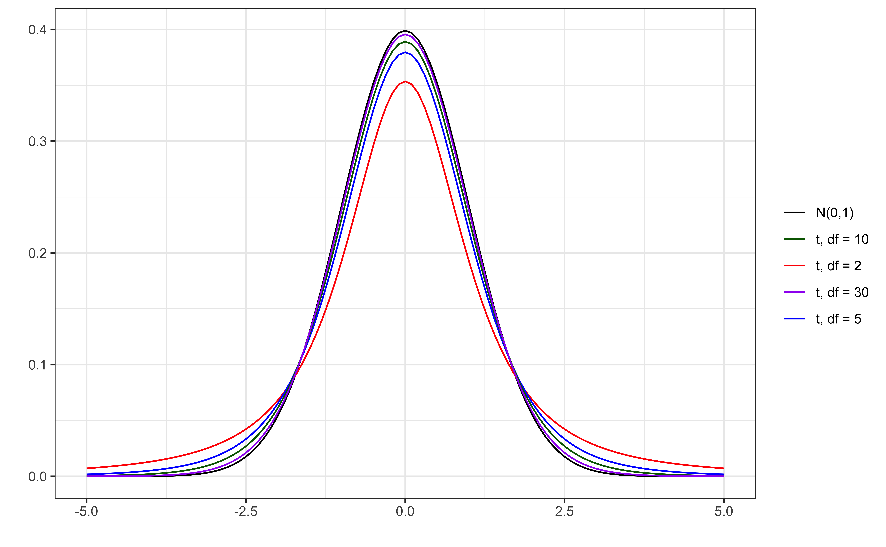

Inference for regression
Sep 19, 2024
Announcements
Lab 02 due on TODAY at 11:59pm
HW 01 due TODAY at 11:59pm
Statistics experience due Tue, Nov 26 at 11:59pm
Statistics experience
Goal: Engage with statistics / data science outside the classroom and connect your experience with what you’re learning in the course.
What: Have a statistics experience + create a slide reflecting on the experience. Counts as a homework grade.
When: Must do the activity this semester. Reflection due Tuesday, November 26 at 11:59pm
For more info: sta221-fa24.netlify.app/hw/stats-experience
Reminder: course policies about assignments
-
- HW and labs accepted up to 2 days late.
- 5% deduction for each 24-hour period the assignment is late.
-
- Can use on HW and individual labs
Lowest HW and lowest lab grade dropped at the end of the semester.
Reminder: course policies about assignments
- Read the feedback on Gradescope carefully! If you have questions about the comments, ask a member of the teaching team during office hours or before/after class.
- Regrade requests
- Opened 1 day after assignment is returned and due within 1 week
- Only submit regrade request if there is an error in the grading not to dispute points or ask questions about grading.
- Prof. Tackett or Kat (Head TA) will regrade the entire exercise being disputed, which could potentially result in a lower grade.
Poll: Office hours availability
Topics
Understand statistical inference in the context of regression
Describe the assumptions for regression
Understand connection between distribution of residuals and inferential procedures
Conduct inference on a single coefficient
Computing setup
Data: NCAA Football expenditures
Today’s data come from Equity in Athletics Data Analysis and includes information about sports expenditures and revenues for colleges and universities in the United States. This data set was featured in a March 2022 Tidy Tuesday.
We will focus on the 2019 - 2020 season expenditures on football for institutions in the NCAA - Division 1 FBS. The variables are :
total_exp_m: Total expenditures on football in the 2019 - 2020 academic year (in millions USD)enrollment_th: Total student enrollment in the 2019 - 2020 academic year (in thousands)type: institution type (Public or Private)
Univariate EDA
Bivariate EDA

Regression model
exp_fit <- lm(total_exp_m ~ enrollment_th + type, data = football)
tidy(exp_fit) |>
kable(digits = 3)| term | estimate | std.error | statistic | p.value |
|---|---|---|---|---|
| (Intercept) | 19.332 | 2.984 | 6.478 | 0 |
| enrollment_th | 0.780 | 0.110 | 7.074 | 0 |
| typePublic | -13.226 | 3.153 | -4.195 | 0 |
For every additional 1,000 students, we expect the institution’s total expenditures on football to increase by $780,000, on average, holding institution type constant.
From sample to population
For every additional 1,000 students, we expect the institution’s total expenditures on football to increase by $780,000, on average, holding institution type constant.
- This estimate is valid for the single sample of 127 higher education institutions in the 2019 - 2020 academic year.
- But what if we’re not interested quantifying the relationship between student enrollment, institution type, and football expenditures for this single sample?
- What if we want to say something about the relationship between these variables for all colleges and universities with football programs and across different years?
Inference for regression
Statistical inference
Statistical inference provides methods and tools so we can use the single observed sample to make valid statements (inferences) about the population it comes from
For our inferences to be valid, the sample should be representative (ideally random) of the population we’re interested in
Inference for linear regression
Inference based on ANOVA
Hypothesis test for the statistical significance of the overall regression model
Hypothesis test for a subset of coefficients
Inference for a single coefficient \(\beta_j\)
Hypothesis test for a coefficient \(\beta_j\)
Confidence interval for a coefficient \(\beta_j\)
Linear regression model
\[ \begin{aligned} \mathbf{y} &= Model + Error \\[5pt] &= f(\mathbf{X}) + \boldsymbol{\epsilon} \\[5pt] &= E(\mathbf{y}|\mathbf{X}) + \mathbf{\epsilon} \\[5pt] &= \mathbf{X}\boldsymbol{\beta} + \mathbf{\epsilon} \end{aligned} \]
We have discussed multiple ways to find the least squares estimates of \(\boldsymbol{\beta} = \begin{bmatrix}\beta_0 \\\beta_1\end{bmatrix}\)
- None of these approaches depend on the distribution of \(\boldsymbol{\epsilon}\)
Now we will use statistical inference to draw conclusions about \(\boldsymbol{\beta}\) that depend on particular assumptions about the distribution of \(\boldsymbol{\epsilon}\)
Linear regression model
\[\begin{aligned} \mathbf{Y} = \mathbf{X}\boldsymbol{\beta} + \boldsymbol{\epsilon}, \hspace{8mm} \boldsymbol{\epsilon} \sim N(0, \sigma^2_{\epsilon}\mathbf{I}) \end{aligned} \]
such that the errors are independent and normally distributed.
- Independent: Knowing the error term for one observation doesn’t tell you anything about the error term for another observation
- Normally distributed: Tell us the shape of the distribution of residuals
What else do we know about the distribution of the residuals based on this equation?
Describing random phenomena
There is some uncertainty in the residuals (and the predicted responses), so we use mathematical models to describe that uncertainty.
Some terminology:
Sample space: Set of all possible outcomes
Random variable: Function (mapping) from the sample space onto real numbers
Event: Subset of the sample space, i.e., a set of possible outcomes (possible values the random variable can take)
Probability distribution function: Mathematical function that produces probability of occurrences for events in the sample space
Example
Suppose we are tossing 2 fair coins with sides heads (H) and tails (T)
Sample space: {HH, HT, TH, TT}
Random variable: \(X\) : The number of heads in two coin tosses
Event: We flip two coins and get 1 head
Probability distribution function: \[P(X = x_i) = {2 \choose x_i}0.5^{x_i}{0.5}^{2-x_i}\]
Now we can find \[P(X = 1) = {2 \choose 1}0.5^1{0.5}^{2-1} = 0.5\]
Mathematical representation
\[ \mathbf{y}|\mathbf{X} \sim N(\mathbf{X}\boldsymbol{\beta}, \sigma_\epsilon^2\mathbf{I}) \]

Image source: Introduction to the Practice of Statistics (5th ed)
Expected value of \(\mathbf{y}\)
Let \(\mathbf{b} = \begin{bmatrix}b_1 \\ \vdots \\b_p\end{bmatrix}\) be a \(p \times 1\) vector of random variables.
Then \(E(\mathbf{b}) = E\begin{bmatrix}b_1 \\ \vdots \\ b_p\end{bmatrix} = \begin{bmatrix}E(b_1) \\ \vdots \\ E(b_p)\end{bmatrix}\)
Use this to find \(E(\mathbf{y}|\mathbf{X})\).
Variance
Let \(\mathbf{b} = \begin{bmatrix}b_1 \\ \vdots \\b_p\end{bmatrix}\) be a \(p \times 1\) vector of independent random variables.
Then \(Var(\mathbf{b}) = \begin{bmatrix}Var(b_1) & 0 & \dots & 0 \\ 0 & Var(b_2) & \dots & 0 \\ \vdots & \vdots & \dots & \cdot \\ 0 & 0 & \dots & Var(b_p)\end{bmatrix}\)
Use this to find \(Var(\mathbf{y}|\mathbf{X})\).
Assumptions of regression
\[ \mathbf{y}|\mathbf{X} \sim N(\mathbf{X}\boldsymbol{\beta}, \sigma_\epsilon^2\mathbf{I}) \]
- Linearity: There is a linear relationship between the response and predictor variables.
- Constant Variance: The variability about the least squares line is generally constant.
- Normality: The distribution of the residuals is approximately normal.
- Independence: The residuals are independent from one another.
Estimating \(\sigma^2_{\epsilon}\)
Once we fit the model, we can use the residuals to estimate \(\sigma_{\epsilon}^2\)
\(\hat{\sigma}^2_{\epsilon}\) is needed for hypothesis testing and constructing confidence intervals for regression
\[ \hat{\sigma}^2_\epsilon = \frac{\sum_\limits{i=1}^n(y_i - \hat{y}_i)^2}{n-p-1} = \frac{\sum_\limits{i=1}^ne_i^2}{n - p - 1} = \frac{SSR}{n - p - 1} \]
- The regression standard error \(\hat{\sigma}_{\epsilon}\) is a measure of the average distance between the observations and regression line
\[ \hat{\sigma}_\epsilon = \sqrt{\frac{SSR}{n - p - 1}} \]
Inference for a single coefficient
Inference for \(\beta_j\)
We often want to conduct inference on individual model coefficients
Hypothesis test: Is there a linear relationship between the response and \(x_j\)?
Confidence interval: What is a plausible range of values \(\beta_j\) can take?
But first we need to understand the distribution of \(\hat{\beta}_j\)
Sampling distribution of \(\hat{\beta}\)
A sampling distribution is the probability distribution of a statistic based on a large number of random samples of size \(n\) from a population
The sampling distribution of \(\hat{\boldsymbol{\beta}}\) is the probability distribution of the estimated coefficients if we repeatedly took samples of size \(n\) and fit the regression model
\[ \hat{\boldsymbol{\beta}} \sim N(\boldsymbol{\beta}, \sigma^2_\epsilon(\mathbf{X}^T\mathbf{X})^{-1}) \]
The estimated coefficients \(\hat{\boldsymbol{\beta}}\) are normally distributed with
\[ E(\hat{\boldsymbol{\beta}}) = \boldsymbol{\beta} \hspace{10mm} Var(\hat{\boldsymbol{\beta}}) = \sigma^2_{\epsilon}(\boldsymbol{X}^T\boldsymbol{X})^{-1} \]
Sampling distribution of \(\hat{\beta}_j\)
\[ \hat{\boldsymbol{\beta}} \sim N(\boldsymbol{\beta}, \sigma^2_\epsilon(\mathbf{X}^T\mathbf{X})^{-1}) \]
Let \(\mathbf{C} = (\mathbf{X}^T\mathbf{X})^{-1}\). Then, for each coefficient \(\hat{\beta}_j\),
\(E(\hat{\beta}_j) = \boldsymbol{\beta}_j\), the \(j^{th}\) element of \(\boldsymbol{\beta}\)
\(Var(\hat{\beta}_j) = \sigma^2_{\epsilon}C_{jj}\)
\(Cov(\hat{\beta}_i, \hat{\beta}_j) = \sigma^2_{\epsilon}C_{ij}\)
Hypothesis test for \(\beta_j\)
Steps for a hypothesis test
- State the null and alternative hypotheses.
- Calculate a test statistic.
- Calculate the p-value.
- State the conclusion.
Hypothesis test for \(\beta_j\): Hypotheses
We will generally test the hypotheses:
\[ \begin{aligned} &H_0: \beta_j = 0 \\ &H_a: \beta_j \neq 0 \end{aligned} \]
State these hypotheses in words.
Hypothesis test for \(\beta_j\): Test statistic
Test statistic: Number of standard errors the estimate is away from the null
\[ \text{Test Statstic} = \frac{\text{Estimate - Null}}{\text{Standard error}} \\ \]
If \(\sigma^2_{\epsilon}\) was known, the test statistic would be
\[Z = \frac{\hat{\beta}_j - 0}{SE(\hat{\beta}_j)} ~ = ~\frac{\hat{\beta}_j - 0}{\sqrt{\sigma^2_\epsilon C_{jj}}} ~\sim ~ N(0, 1) \]
In general, \(\sigma^2_{\epsilon}\) is not known, so we use \(\hat{\sigma}_{\epsilon}^2\) to calculate \(SE(\hat{\beta}_j)\)
\[T = \frac{\hat{\beta}_j - 0}{SE(\hat{\beta}_j)} ~ = ~\frac{\hat{\beta}_j - 0}{\sqrt{\hat{\sigma}^2_\epsilon C_{jj}}} ~\sim ~ t_{n-p-1} \]
Hypothesis test for \(\beta_j\): Test statistic
The test statistic \(T\) follows a \(t\) distribution with \(n - p -1\) degrees of freedom.
We need to account for the additional variability introduced by calculating \(SE(\hat{\beta}_j)\) using an estimated value instead of a constant
t vs. N(0,1)
Figure 1: Standard normal vs. t distributions
Hypothesis test for \(\beta_j\): P-value
The p-value is the probability of observing a test statistic at least as extreme (in the direction of the alternative hypothesis) from the null value as the one observed
\[ p-value = P(|t| > |\text{test statistic}|), \]
calculated from a \(t\) distribution with \(n- p - 1\) degrees of freedom
Why do we take into account “extreme” on both the high and low ends?
Understanding the p-value
| Magnitude of p-value | Interpretation |
|---|---|
| p-value < 0.01 | strong evidence against \(H_0\) |
| 0.01 < p-value < 0.05 | moderate evidence against \(H_0\) |
| 0.05 < p-value < 0.1 | weak evidence against \(H_0\) |
| p-value > 0.1 | effectively no evidence against \(H_0\) |
These are general guidelines. The strength of evidence depends on the context of the problem.
Hypothesis test for \(\beta_j\): Conclusion
There are two parts to the conclusion
Make a conclusion by comparing the p-value to a predetermined decision-making threshold called the significance level ( \(\alpha\) level)
If \(\text{P-value} < \alpha\): Reject \(H_0\)
If \(\text{P-value} \geq \alpha\): Fail to reject \(H_0\)
State the conclusion in the context of the data
Application exercise
Recap
Introduced statistical inference in the context of regression
Described the assumptions for regression
Connected the distribution of residuals and inferential procedures
Conducted inference on a single coefficient